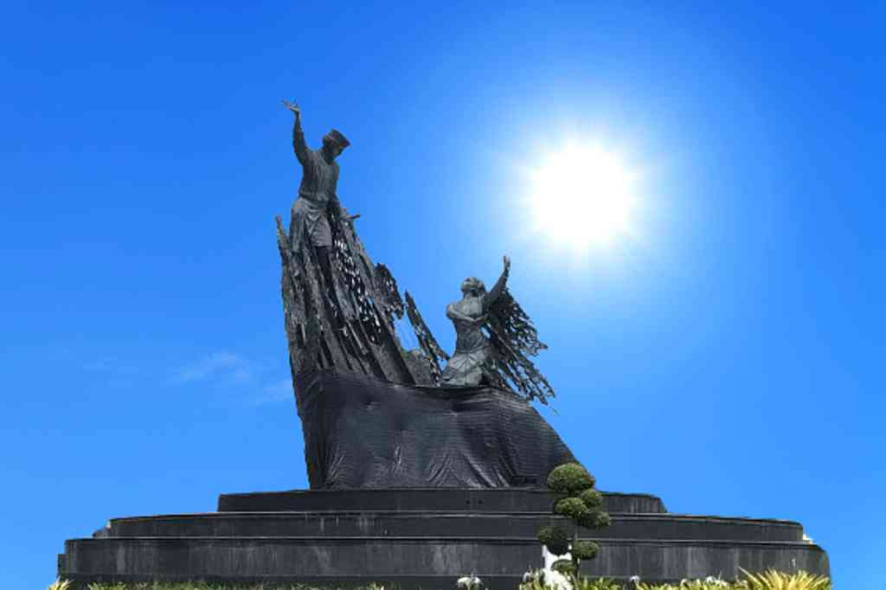

Sejarah Singkat Pekanbaru
Pekanbaru awalnya bernama Senapelan, sebuah wilayah di bawah kekuasaan Kerajaan Siak Sri Indrapura.
Pada tahun 1749, Sultan Siak memindahkan pusat perdagangan ke daerah ini karena letaknya strategis
di tepi Sungai Siak. Nama "Pekanbaru" diresmikan pada 23 Juni 1784, artinya "pasar yang baru".
Sejak itu, kota ini berkembang menjadi pusat perdagangan dan pemerintahan di wilayah Riau.
Lokasi Geografis
Pekanbaru terletak di bagian tengah Pulau Sumatera, dengan koordinat sekitar
0.5° LU dan 101.45° BT. Kota ini dilalui oleh Sungai Siak dan menjadi pintu gerbang utama
menuju wilayah Riau Daratan dan pesisir timur Sumatera.
Dokumen Ibu Kota Pekanbaru

Jembatan Siak

Gedung Ibu Kota Pekan Baru

Tugu Zapin Pekan Baru